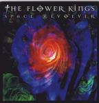

| Artist: | The Flower Kings |
| Title: | Space Revolver |
| Label: | Inside Out IOMCD062 |
| Length(s): | 76 minutes |
| Year(s) of release: | 2000 |
| Month of review: | 09/2000 |
| 1) | I Am The Sun (part One) | 15.03 |
| 2) | Dream On Dreamer | 2.43 |
| 3) | Rumble Fish Twist | 8.06 |
| 4) | Monster Within | 12.55 |
| 5) | Chicken Farmer Song | 5.09 |
| 6) | Underdog | 5.29 |
| 7) | You Don't Know What You've Got | 2.39 |
| 8) | Slave To Money | 7.30 |
| 9) | A Kings Prayer | 6.02 |
| 10) | A Am The Sun (part Two) | 10.48 |